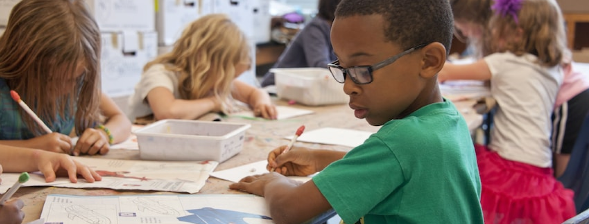
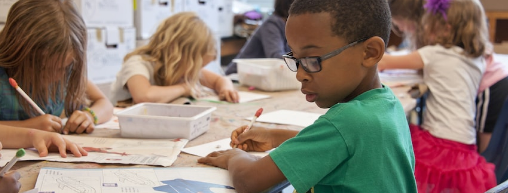

Resensi Buku: Sistem Pendidikan Finlandia Catatan dan Pengalaman Seorang Ibu
Bagaimana caranya penduduk mereka memiliki tingkat literasi yang sangat tinggi? Apa benar sekolah di Finlandia tidak mengadakan ujian dan tidak memberikan pekerjaan rumah? Bagaimana caranya negara kecil ini memiliki nilai luar biasa dalam tes PISA (Programme for International Student Assessment)? Semua pertanyaan-pertanyaan itu dijawab dengan sangat baik di buku ini berdasarkan kisah dan pengalaman yang dialami langsung oleh penulis..
Ditulis oleh Ratih D. Adiputri, seorang akademisi sekaligus seorang ibu dari dua orang anak yang tinggal dan merasakan secara langsung sistem pendidikan Finlandia. Buku yang memiliki tebal 259 halaman ini menjelaskan bagaimana sistem pendidikan Finlandia dari mulai undang-undangnya, kurikulum, hingga bagaimana masyarakat Finlandia sendiri mengenai sistem pendidikan mereka. Elinikainen oppiminen atau pembelajaran seumur hidup merupakan moto dalam sistem pendidikan Finlandia. Pendidikan di Finlandia memang sangat luar biasa, dikemas secara mudah dan gratis bagi seluruh warganya. Finlandia benar-benar memastikan siapapun berhak mendapatkan pendidikan terbaik, dan itu didapatkan semua warga tanpa membedakan latar belakang ekonomi keluarga. Sistem pendidikan Finlandia tersusun dengan sangat baik dalam aspek apapun, dari mulai perencanaan hingga tahap lanjutan semuanya benar-benar disiapkan oleh Finlandia. Konsep pembelajaran dari sejak masih anak-anak hingga usia remaja sampai dewasa sudah terkonsep dengan sangat baik di Finlandia.
Tingkat literasi yang tinggi hingga predikat negara yang memiliki tingkat korupsi yang sangat minim merupakan salah satu contoh keberhasilan sistem pendidikan Finlandia. Ujian dan pekerjaan rumah yang biasanya menjadi beban dan ketakutan bagi siswa, benar-benar tak terjadi di Finlandia. Suasana seperti itulah yang membuat siswa di Finlandia selalu bahagia, karena jika ada ujian pun, Finlandia tidak menjadikan itu sebuah tolak ukur kecerdasan siswa, itu didukung juga sistem pendidikan Finlandia yang tidak mengenal sistem ranking, karena itulah siswa benar-benar enjoy menikmati masa sekolahnya. Rahasia sukses Finlandia mendapatkan nilai tes PISA yang bagus juga karena mereka terbiasa enjoy menghadapi soal-soal ujian, sistem pendidikan disana selalu menganggap ujian bukanlah sebuah hal yang urgent dan menentukan segalanya..
Masyarakat dunia selalu kagum akan capaian hasil tes PISA Finlandia, namun nyatanya pemerintah Finlandia justru menganggap itu biasa saja, karena bagi mereka keberhasilan menanamkan nilai-nilai baik dan kebiasaan lebih penting dibandingkan capaian yang diberi nilai oleh sebuah angka. Penanaman nilai-nilai dan kebiasaan baik inilah yang sangat menonjol dalam sistem pendidikan Finlandia. Penulis menceritakan bahwa sejak sekolah tingkat TK, anak-anak di Finlandia sudah diajarkan nilai-nilai dasar seperti kejujuran, budaya antri, menghargai pendapat, dll. Kebiasaan-kebiasaan tersebut benar-benar membawa dampak pada banyak hal positif di masa yang akan datang.
Meskipun ditulis oleh seorang akademisi, buku ini benar-benar ringan dan mudah dipahami meskipun masih terdapat beberapa istilah yang agaknya kurang familiar bagi orang awam. Dengan menjelaskan mengenai seluk beluk pendidikan Finlandia yang cukup berhasil, buku ini sangat cocok dijadikan sebuah bacaan bagi guru, siswa, pengambil kebijakan, atau siapapun yang tertarik mengenai pendidikan.Penanaman nilai-nilai dan kebiasaan baik inilah yang sangat menonjol dalam sistem pendidikan Finlandia.Penulis menceritakan bahwa sejak sekolah tingkat TK, anak-anak di Finlandia sudah diajarkan nilai-nilai dasar seperti kejujuran, budaya antri, menghargai pendapat, dll.Kebiasaan-kebiasaan tersebut benar-benar membawa dampak pada banyak hal positif di masa yang akan datang.
Meskipun ditulis oleh seorang akademisi, buku ini benar-benar ringan dan mudah dipahami meskipun masih terdapat beberapa istilah yang agaknya kurang familiar bagi orang awam. Dengan menjelaskan mengenai seluk beluk pendidikan Finlandia yang cukup berhasil, buku ini sangat cocok dijadikan sebuah bacaan bagi guru, siswa, pengambil kebijakan, atau siapapun yang tertarik mengenai pendidikan
Judul Buku : Sistem Pendidikan Finlandia Catatan dan Pengalaman Seorang Ibu
Penulis : Ratih D. Adiputri
Penerbit : KPG (Kepustakaan Populer Gramedia)
Tahun terbit : 2019
Tebal Buku : 259 halaman
ISBN : 978-602-481-307-9
Fasa Muhamad Hapid, Aktivis Persma Suaka UIN Bandung.